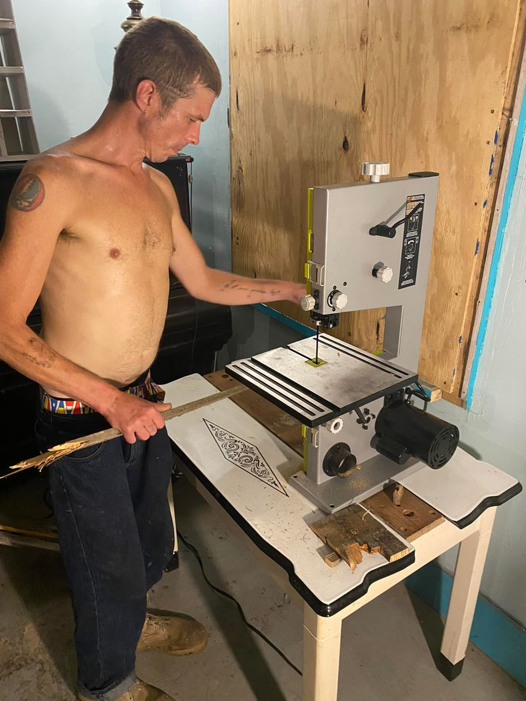

Sage Lewis Facebook Archive: Post 359
Aug 07, 2022 11:28:28am

Mobile uploads
A major focus of the @[109672538495516:274:Church of the Nomadic Spirit] these days is empowerment. Here is Kenny Boldt making crosses that we can sell.
Back to Index